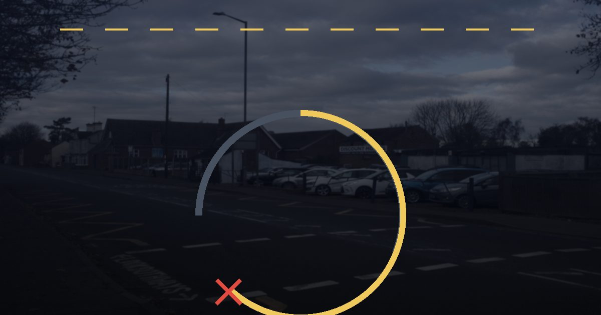

리스·렌트 중도해지 위약금 2026 — 36개월 계약 24개월에 끊으면 얼마, 승계가 싼 이유

발행일 2026-10-01
30초 요약
| 항목 | 내용 |
|---|---|
| 누가 | 자동차 리스·장기렌트를 약정 기간(통상 3~5년) 다 채우기 전에 끊으려는 사람 |
| 계산식 | 위약금 = 미회수원금 × 최고요율 × (잔여개월 ÷ 총개월). 잔여가 적을수록, 시간이 지날수록 싸집니다 |
| 요율 편차 | 최고요율은 업체별로 40%~90%까지 차이 납니다(소비자원 조사). 계약서에만 적혀 있습니다 |
| 세 갈래 | 반납(중도해지손해배상금), 인수(규정손해배상금+차량 대금), 승계(미회수원금×승계요율). 통상 승계가 가장 쌉니다 |
| 마지막 함정 | 약관은 "잔여리스료 합계 이내"로 상한을 두지만, 반납하면 주행거리 초과분과 감가·정비비가 따로 청구될 수 있습니다 |
1. 누가 해당하나 — 리스 종류 구분부터
리스는 운용리스와 금융리스로 갈립니다. 운용리스는 약정 기간 빌려 쓰다가 만기에 반납할 수 있는 상품이고, 금융리스는 할부 구매와 비슷해 만기 인수가 전제입니다. 중도해지는 두 상품에 다 있지만 이름과 계산식이 다릅니다. 운용리스에서 차를 반납하면 '중도해지손해배상금', 그대로 사들이면 '규정손해배상금'이 부과되고, 금융리스는 애초 인수만 가능하니 규정손해배상금 계산식이 적용됩니다.
장기렌터카는 리스와 별개인 자동차 대여계약입니다. 공정거래위원회 자동차대여 표준약관에는 고객의 사정으로 해지할 때 잔여 기간 대여요금의 10% 상당액을 회사에 준다는 조항이 있고, 6개월 이상 장기계약은 손실을 고려해 수수료를 별도로 약정할 수 있다는 단서가 붙어 있습니다. 그래서 장기렌트 이용자가 실제로 내는 위약금은 계약서에 정한 수수료율이 결정합니다. 업계에서 통용되는 산정식은 잔여 기간 렌탈료 × 수수료율이고, 수수료율은 이용 기간이 짧을수록 높게 계단으로 짜여 있습니다. 공개된 업체 기준을 예로 들면 롯데렌터카는 1년 미만 30%에서 시작해 4년 이상이면 10%까지 내려가고, AJ렌터카는 1년 미만 35%·3년 이상 15%, SK렌터카는 1년 이하 30%·3년 이하 10%입니다. 캐피탈 쪽은 더 가파라서 아주캐피탈은 잔여기간이 50% 이상 남았을 때 38%를 적용합니다. 월 렌탈료 100만 원·36개월 계약으로 24개월을 타고 반납하면 잔여 12개월분 1,200만 원에 수수료율을 곱한 금액이 위약금이 됩니다.
2. 얼마를 내나 — 같은 계약도 시점마다 금액이 다릅니다
리스 약관의 공통 구조는 이렇습니다. 위약금 = 미회수원금 × 위약금률. 미회수원금은 차량 가격과 취득세 등 계약 체결에 든 비용 중 아직 회수되지 않은 금액이고, 위약금률은 최고요율 × (잔여개월 ÷ 총개월)로 계산됩니다. 계약 초기에는 잔여개월이 많아 요율이 최고요율에 가깝고, 만기에 가까워지면 0에 수렴합니다. 약관은 경과에 따라 연·월·일 단위로 차등 인하하는 방식을 명시하고, 잔여 1년 이하면 월·일 단위로 더 잘게 깎아줍니다.
진짜 변수는 최고요율입니다. 한국소비자원이 자동차 운용리스를 파는 15개 사업자를 조사한 결과, 벤츠·BMW 파이낸셜과 현대캐피탈 등 3개 사는 최고요율이 40%였던 반면 어떤 곳은 90%였고, 9개 사가 80% 이상을 설정하고 있었습니다. 최고요율이 높은 상품을 계약 초기에 해지하면 위약금이 남은 기간 리스료 총액과 거의 같은 금액이 됩니다. 취득원가 1억1,200만 원짜리를 60개월·월 135만 원으로 리스하다 초기에 반납한 계약자에게 최고요율 85%를 기준으로 7,400만 원이 청구된 실제 사례가 보고됐습니다.
계산 표로 감을 잡아보겠습니다. 미회수원금이 2,000만 원인 36개월 계약을 12개월 만에 해지하는 상황(잔여 24개월)과 24개월 만에 해지하는 상황(잔여 12개월)을 최고요율별로 비교한 예입니다.
| 최고요율 | 12개월경 해지 (잔여 24/36) | 24개월경 해지 (잔여 12/36) | 30개월경 해지 (잔여 6/36) |
|---|---|---|---|
| 40% | 2,000만×40%×24/36 = 533만 원 | 267만 원 | 133만 원 |
| 80% | 1,067만 원 | 533만 원 | 267만 원 |
| 90% | 1,200만 원 | 600만 원 | 300만 원 |
같은 시점·같은 계약인데 업체가 정한 최고요율 하나로 위약금이 두 배 이상 갈립니다. 이 숫자는 계약 확인서와 약관의 '산정요율' 란에 적혀 있습니다. 계약할 때 월 리스료만 보고 고르면 이 항목은 나중에 처음 보게 됩니다.
3. 제외·주의 — 상한은 있지만 추가금은 별개입니다
- 상한 규칙은 있습니다. 운용리스의 중도해지손해배상금은 최초 계약에 따른 잔여리스료 합계 이내, 규정손해배상금과 미회수원금의 합계는 잔여리스료와 잔존가치 합계 이내로 약관이 못 박고 있습니다. 이 상한 넘게 청구받으면 다툴 수 있습니다.
- 부가세는 계산 대상에서 빠지는 편이 일반적입니다. 중도해지손해배상금 산식을 '미도래임대료(부가가치세 제외)'로 명시한 사업자 약관도 실제로 있습니다. 계약서에 '부가세 포함' 문구가 있는지 확인하세요.
- 의무사용기간이 문제입니다. 통상 12개월 정도의 의무사용기간이 끝나기 전에는 반납 해지가 제한되거나 위약금이 가중됩니다.
- 반납하면 주행거리·감가가 남습니다. 약정 주행거리를 초과했거나 차량 손상·감가 산정이 소비자에게 불리하게 되는 업체가 소비자원 조사에서 8개 사 지적됐습니다. 위약금 말고 이 추가금이 나중에 고지서로 날아옵니다.
- 연체 이자가 법정 최고금리(연 20%)를 넘는 업체도 있었습니다. 4개 사가 지적받았습니다. 연체 중이라면 그 요율 자체를 다퉈볼 여지가 있습니다.
- 과실 없는 도난·전손은 배상금 면제입니다. 고객 과실 없이 차가 도난되거나 전손 처리되면 중도해지손해배상금·규정손해배상금 의무를 지지 않습니다. 반대로 고객 과실이 있으면 규정손해배상금이 부과됩니다.
- 위약금이 차 값의 4분의 1에 달하면 법원이 깎아준 판례가 있습니다. 48개월 장기렌트 계약에서 약관대로 1,054만 원을 청구받은 사건에 대해 법원이 "부당하게 과다하다"며 632만 원으로 감액한 사례가 있습니다. 차량을 인도받기도 전에 해지해 감가상각 손해가 없던 사정 등이 참작됐습니다.
4. 서류 — 이것만 있으면 계산됩니다
- 리스(대여) 계약 확인서: 리스 종류(운용/금융), 총 개월 수, 최고요율과 산정방식, 의무사용기간, 승계수수료율, 약정 주행거리가 전부 적혀 있습니다.
- 해지 예정 통지 시점의 미회수원금·잔여개월: 업체 고객센터에 "중도해지 정산 내역서"를 요청하면 항목별 계산서를 줍니다. 이 종이 한 장이 모든 협상의 기준입니다.
- 차량 시세 자료: 인수와 반납을 비교할 때 해당 연식·주행거리 매물 시세가 필요합니다.
5. 순서 — 끊기 전에 이 순서로 계산하세요
1단계, 유형 확인. 계약서에서 운용리스인지 금융리스인지부터 확인합니다. 금융리스는 인수만 가능하니 2단계로 건너뛰세요.
2단계, 의무사용기간 확인. 남아 있으면 반납이 사실상 막혀 있습니다. 승계도 심사 대상임을 감안해야 합니다.
3단계, 정산 내역서 발급. 고객센터에 중도해지 시나리오 3종(반납·인수·승계) 견적을 요청합니다. 이 단계에서 숫자가 없으면 판단이 불가능합니다.
4단계, 승계 검토. 승계는 미회수원금에 승계수수료율을 곱한 뒤 잔여기간에 따라 차등 인하하는 방식으로 계산되고, 최소·최대 금액을 약정서로 정할 수 있습니다. 어떤 사업자는 운용리스 승계요율을 최고 5%·최대 79만9,000 원처럼 한도를 걸어두기도 합니다. 위약금 수백만~수천만 원과 비교를 붙이면 승계가 유리한 경우가 많습니다. 다만 승계는 신규 계약과 동일한 심사를 통과해야 하므로 받을 사람이 신용 심사를 받아야 합니다.
5단계, 인수와 시세 비교. 인수정산금은 미회수원금에 가산율을 적용한 수준으로 나오지만, 그 차를 시세로 되판다는 가정이면 순손실이 줄어드는 경우가 있습니다. 인수 시에는 취득세와 명의이전 비용이 별도로 듭니다.
6단계, 반납이 최후입니다. 반납을 택하면 위약금 외에 주행거리 초과분·감가·정비비를 차량 평가 단계에서 다시 청구받습니다. 반납 직전 세차·손상 수리 견적과 약정 주행거리 잔여량을 미리 계산해두세요.
6. 안 될 때
산정 결과가 이상하다고 느껴지면 두 창구를 순서대로 씁니다. 첫째, 업체 본사에 약관 조문(중도해지손해배상금·규정손해배상금 조항과 상한 문구)을 근거로 재산정을 요구합니다. 둘째, 합의가 안 되면 금융감독원 금융소비자 정보포털(e-zen)의 자동차 리스 민원·분쟁 절차를 이용합니다. 리스료 연체와 무관하게 일률적으로 과도한 수수료를 물리는 구조는 예전부터 감독 당국이 표준약관을 고쳐온 지점(잔여기간 차등·이자 제외)이니, 계약서가 그 기준보다 불리하다면 그대로 받아들이지 마세요.